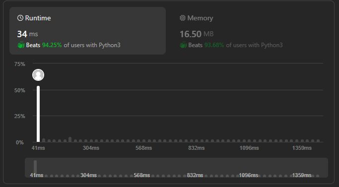

[Leetcode] 1442. Count Triplets That Can Form Two Arrays of Equal XOR - 파이썬, 누적합
리트코드 1442번 문제 풀이.
#Algorithm
접근
- Brutefroce
- DP
- 누적 합
i, j, k 각 for 문 돌리면 O(n^3) 이상 걸리므로 1번은 좋지 못하다. arr[i] 최대 값이 10^8이라 연산도 최소화하는 것이 좋을 듯하다.
XOR 연산은 누적 합이 가능한 연산이다.
EX) arr = [2, 3, 5, 4] -> prefix = [2, 1, 4, 0]
prefix[4] ^ prefix[0] = 2 = arr[1] ^ arr[2] ^ arr[3]
조건에서 a = b가 되기 위해서는, prefix[i-1] == prefix[j]이어야 한다.
풀이
class Solution:
def countTriplets(self, arr: List[int]) -> int:
N = len(arr)
temp = 0
prefix = [0]
for idx in range(N):
temp ^= arr[idx]
prefix.append(temp)
answer = 0
for left in range(N+1):
for right in range(left+1, N+1):
if prefix[left] == prefix[right]:
answer += right - left - 1
return answer
